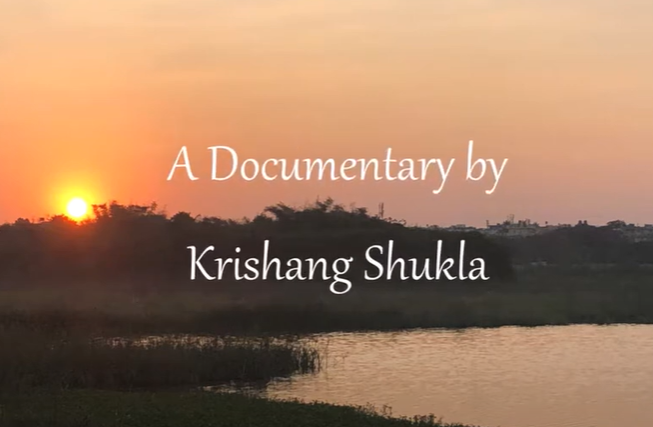
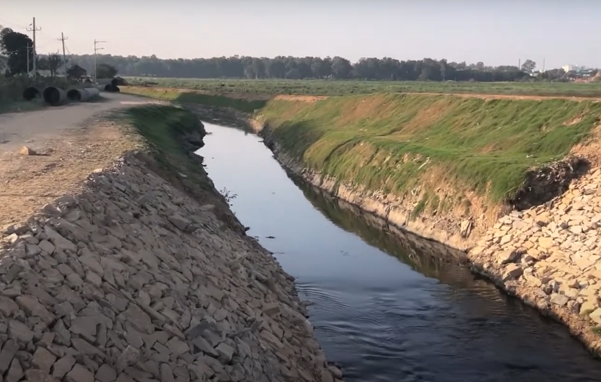
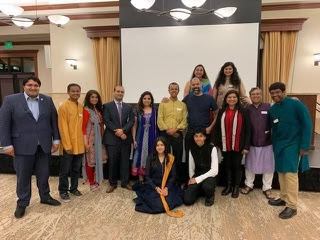

Projects and Experience
Organizations, Projects, and Extracurriculars I have taken since high school to today. Hover over each image to learn more!


The Bangalore Lakes Documentary Project. During my residence in Bengaluru, I noticed
immense pollution in the city's famous lakes. I filmed and edited a documentary that can spread awareness
of the issue and turn to the many solutions we have for the community. The documentary can be viewed
here.

Little Taare is a non-profit organization committed to education in deprived
areas in India. I was responsible for donation collection and gala organization for numerous events
from 2018 to 2021. You can learn more about Little Taare here.


Resume
Krishang Shukla
| Education | Year |
|---|---|
| Georgia Institute of Technology - Computational Media Major | 2023 - Present |
| Georgia State University - 1st Year Computer Science Major | 2022 - 2023 |
| Skills | |
| Intermediate in R Programming, Python, HTML/CSS | |
| Communication, Collaboration and Management: GT1000 TL, Little Taare Fundraising Organization, YAPS Drum Sergeant | |
| Music: Tablas, Snare Drum | |
| Community Service / Experience | |
| Sandwhich Seva - Co-Founder | 2020 - 2022 |
| Sri Surabhi Go Ksetra - Sanctuary Assistant and Event Manager | 2020 - 2022 |
| Empower Martial Arts - Assistant Instructor | 2020 - 2022 |
| Young American Patriots Fife and Drum Corps - Drum Sergeant / Organization President | 2017 - 2022 |
| Leadership | |
| Little Taare - Event Setup Director / Donation Manager | 2018 - 2019 |
| HackerEarth Oak Codefest Hackathon - Stock Market Prediction Team Programmer | 2020 - 2021 |